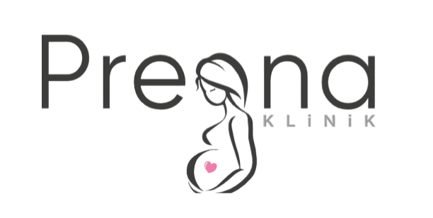

Hekim tarafından şikayetleriniz dikkatlice dinlenir. Sizi asıl rahatsız eden durumlar not edilir. Sonrasında muayene esnasında görsel durum, hekim ve hasta tarafından karşılıklı değerlendirilir (bu durumlarda bir ayna kullanmak daha yardımcı olacaktır) . Jinekolojik muayene esnasında vajina değerlendirilir. Vajen duvarlarında doku hasarları tespit edilir. Takiben vajina girişindeki değişiklikler tespit edilir.
Bu değerlendirmeler sonucu yapılacak özellikle vajen duvarındaki esneklikler ya da gevşeklikler için Co2 lazer tedavi tercih edilebilinir.Bu tedavilerin ameliyat gerektirmemesi poliklinik şartlarında ağrısız şekilde yapılması hasta için konforludur. Hatta hastanın işlem sonrası tekrar gebe kalması durumunda doğum sonrası lazer tekrar edilebilinir bu nedenle tekrar doğum yapmayı düşünen hastalar için iyi bir seçenektir. Lazer esnasında hastayı rahatsız edecek bir ağrı oluşmaz. Hasta işlem sonrası hayatına kaldığı yerden devam eder. İşlem sonrası 2-3 kadar yoğun bir akıntı yaşanabilir. Bir hafta cinsel perhiz yapılmalıdır. Lazer sonra iyileşme zamana ihtiyaç duyar, yani hemen bir anda herşey düzelmez genelde etki 3-4 hafta sonra belirgin hissedilmeye başlanır. Genelde 3 seans planlanma yapılır ancak bu hastanın durumuna göre değerlendirilir. Ancak Özellikle ileri yaştaki hastalar ya da ileri derece vajinal duvar sarkmalarında Lazerin başarı şansı düşüktür. Yine vajina girişindeki hasarlar için de Lazer yetersiz kalmaktadır.
Muayene esnasında vajinada izlenen hasarlar tespit edilir. Ön duvardaki hasarlar için ön duvar onarımı, arka duvardaki hasarlar için arka duvar onarımı yapılır. Bazen rahimde aşağı doğru sarkmış olabilir bu durumlarda rahimin yukarı çekilmesi planlanabilir. Operasyon tekniği hastanın mevcut durumuna, taleplerine ve şikayetlerine göre belirlenir. Tanımlanmış bir çok ameliyat yöntemi bulunmaktadır. Bunların bir çoğu vajinal yol ile yapılır. Operasyon sonrası hastanede 1 gün kalınması genellikle yeterli olur. Anestezi olarak genelde bel altını tamamen uyuşturan lokal yöntemler tercih edilir (spinal anestezi). Konulan dikişler genellikle kendiliğinde kaybolan dikişlerdir ve 6 hafta içinde tamamen kaybolur. Hastanın ameliyat sonrası ameliyat alanını mümkün olduğu kadar kuru tutmalıdırlar. vajinal basıncı arttıracak sporlardan, ağır kaldırmadan uzak durmalıdırlar. Cinsel ilişkiye ve egzersizlere 6 hafta sonra başlanıla bilinir.
Yukarıdaki resimlerde sarkmalar gösterilmiştir hafif vakalarda lazer yeterli olurken ileri sarkmalarda ameliyat gerekebilmektedir. Rahim sarkması genelde karından yapılan ameliyatlarla düzeltilir. Farklı yöntemler olsa da en sık yapılan işlemlerden biri rahimin kalça kemiğine asılmasıdır. Mesane ve barsak sarkmaları vajinal yoldan yapılan operasyonlarla düzeltilmektedir sekilde görüldüğü gibi vajina ön ve arka duvar güçlendilir.